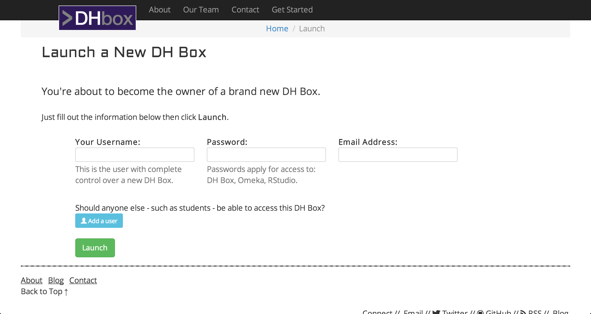

A Digital Humanities
Laboratory
in the cloud
Cailean Cooney, Harlan Kellaway, Gioia Stevens, & Stephen Zweibel
Digital Humanities
Is it a field?
Define it
New: 20 years
Humanities Computing -> Digital Humanities
Here's a stab at it
Using computational methods for humanistic inquiry
What else is DH?
Community
Professional apparatus
Methodology
Methodology that is
- critical
- speculative
- qualitative
- quantitative
- praxis oriented
- interdisciplinary
DH Software
- Text Mining
- Topic Modeling
- Digital Repositories
- Interactive Exhibits
- Data Visualization
Barriers
Require specialized knowledge to install, configure, and use
Resources (including hardware, technical support, institutional backing) are often limited
With DH Box
You can...
curriculum at the push of a button
Avoid
Requesting server space from IT Dept.
Downloading software
Sifting through installation documentation
Dealing with firewalls and operating system configurations
Yes, literally at the push of a button

DH Box Welcome Menu
What's working behind it?
A virtual linux computer with all the bells
and whistles of a traditional computer
- Operating System
- Software
- Data Backup
- Memory
Tap into this system via a wireless or network server
Possibilities
Individual virtual computers
for students and faculty?
A Domain of One's Own at University of Mary Washington
umwdomains.com
"Reclaim the web"
"Take control of your digital identity"
Availability
Alpha/Beta phase...would you like to test?
Hosted service
Requirements
A browser and an internet connection
Faculty who have experience with one or more
of the applications included in DH Box:
- Omeka
- Natural Language Toolkit (NLTK)
- MALLET
- R Studio
- IPython
Questions?
Stephen Zweibel @stevezweibel
Cailean Cooney @_csmcc
Harlan Kellaway @DigiHumanatee
Gioia Stevens @gioiastevens
Thanks to Professors Matt Gold & Dennis Tenen